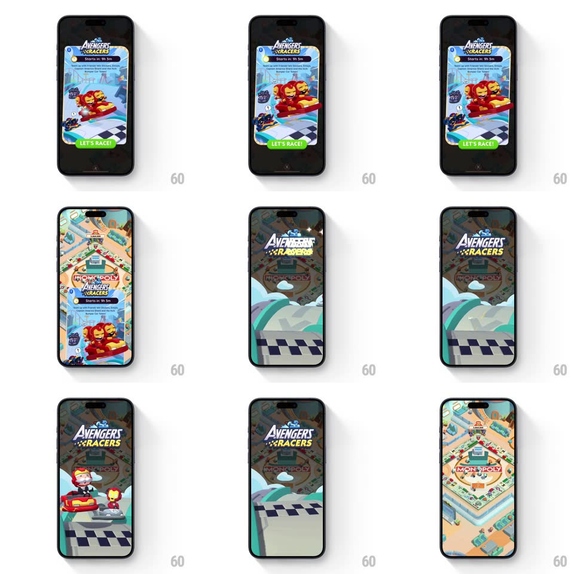

Media
Frame-by-frame

Rebuild this interaction 1:1: Monopoly Go's race event splash - tapping LET'S RACE! on the Avengers Racers event modal launches a full-screen takeover: the "AVENGERS RACERS" logo drops in over a racetrack wipe, cartoon bumper cars race across the screen, and the splash wipes away back to the board.

Rebuild this interaction 1:1: Monopoly Go's race event splash - tapping LET'S RACE! on the Avengers Racers event modal launches a full-screen takeover: the "AVENGERS RACERS" logo drops in over a racetrack wipe, cartoon bumper cars race across the screen, and the splash wipes away back to the board. ## Integration Integration: stack-agnostic spec - springs given as stiffness/damping, timed motions as duration + curve; map every value to your framework and animation library of choice. ## Scene Start: the event modal over the dimmed board (AVENGERS RACERS logo, "Starts in: 9h 5m" pill, Iron Man and hero bumper cars on a checkered track, green LET'S RACE! button). The splash: full-screen track scene with the big logo, wave-shaped road layers, and character bumper cars. ## Motion spec Pattern: full-screen branded splash transition. - Tap LET'S RACE!: the button flashes (white overlay, 100ms) and the modal scales up and out (scale 1 -> 1.1, opacity -> 0, 200ms). - The splash wipes in with a diagonal road-wave shape sweeping bottom-left to top-right (450ms, ease-in-out), covering the board. - The AVENGERS RACERS logo drops in (translateY -40px -> 0 with spring ~350/18, 350ms) and holds with a slow bob. - Bumper cars race across at staggered times: cars enter from alternating edges (translateX -120% -> +120%, 700-900ms each, slight ease-in at entry), each with speed-line trails and a small bounce on entry. - The cars pass behind the logo layer - depth reads logo > cars > road. - The splash exits with the reverse road-wave wipe (450ms), revealing the board clean. ## Calibration - Total takeover is ~2.5-3s - long enough to read the brand, short enough to skip mentally. - Cars overlap in time but never occupy the same lane. ## Reduced motion Splash crossfades in/out; cars static. ## Don't miss - The wipe edge is shaped like the track's wave, not a straight diagonal. - The checkered flag strip runs along the bottom of the splash scene.